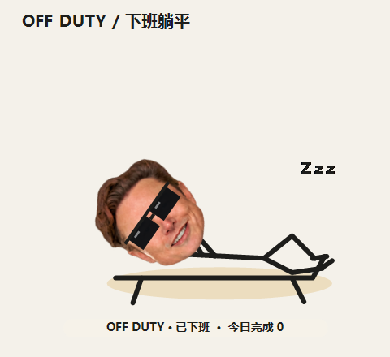

点一下，他就怂。
大头负责表情。小身子负责闹。
六档脾气 · 点数字试试
越催越上头。
你负责叫停。
15 分钟，
一场小型心理活动。
他先摸鱼，再盯你，最后热鞭子。
到点开始一鞭一鞭地催。
你点他一下，他立刻收手，重新冷却。
左键每点一次，今日完成 +1。
北京时间零点清零，拖动不算。
- 0—8 min
摸鱼
走走停停，表情管理良好。
- 8—12 min
盯你
不说话，也能感觉到目光。
- 12—14 min
催促
开始坐不住，眉头也坐不住。
- 14—15 min
蓄力
还有一分钟。手已经痒了。
默认 15 分钟。冷却时间可以设成 1–180 分钟。
他也讲劳动法，至少对自己讲。
下班。
火星明天再说。
一到下班时间，戴墨镜，躺下。
默认不催。想逗他，下班也能右键试抽。
点一下收鞭，再躺回去。
第二天上班，再给你完整一轮冷却。
默认北京时间 09:00–18:00。
你可以改时间、设夜班，也可以手动宣布今日下班。

脾气归他。
开关归你。
想安静一点？
提示音可以关。4–6 级的轻抖动也可以关，不用被闪屏吓一跳。台词偶尔冒出来，说完就走。
想清净一点？
卡皮芭拉好友推荐也能关。宠物大小、左右闲逛、上下班时间，都在右键设置里。
他只负责催。关注、发帖、评论，还是你亲自在 X 里做。
桌面很小，脾气很大。